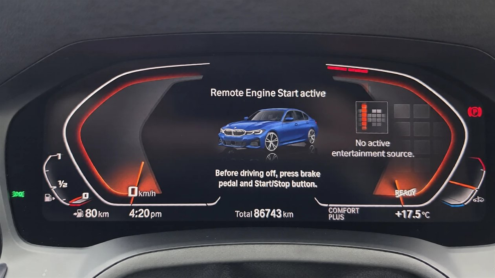
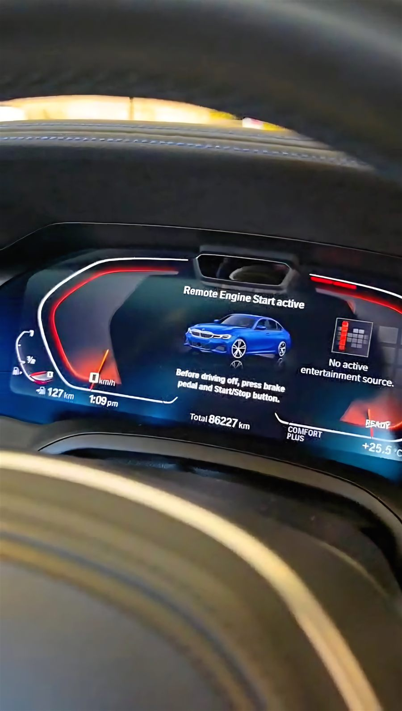
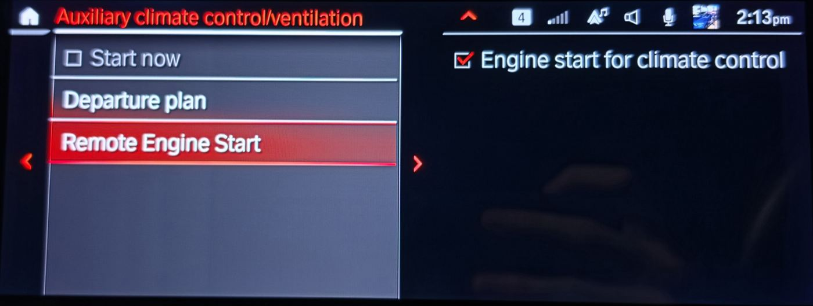
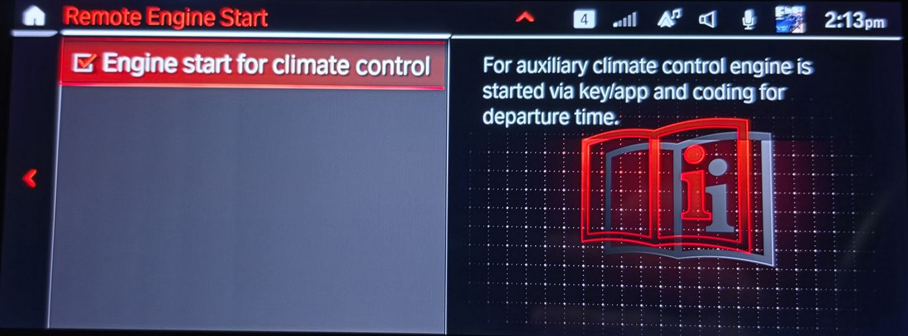
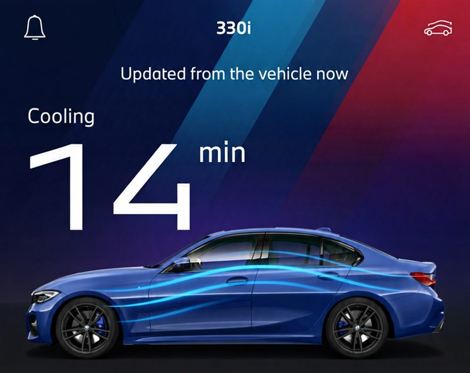
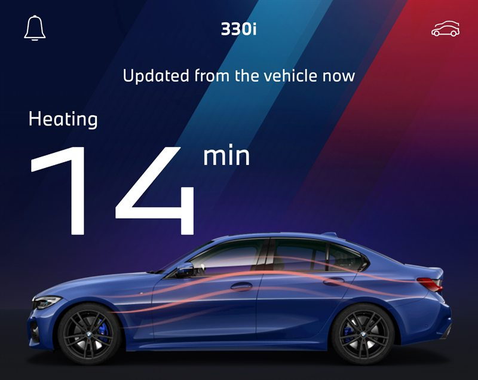

Press lock three times
Point your key at the car and press lock three times. The engine starts and the climate control warms or cools the cabin.
Factory remote engine start · Option 1CR
We turn on BMW's own remote engine start on eligible BMW and Toyota Supra models with software coding only. Press lock three times and the engine starts, so the cabin is warm or cool before you get in. There's no aftermarket hardware and no wiring.

Independent coding service. Not affiliated with BMW AG or Toyota Motor Corporation.
Point your key at the car and press lock three times. The engine starts and the climate control warms or cools the cabin.
The car stays locked while the engine runs, and it can't be driven off without the key.
It uses the remote-start software already in your car. There are no extra modules, no wiring and no cut wires.
Press lock three times and the engine starts. The instrument cluster confirms it was started remotely.

G20 3 Series after coding: "Remote Engine Start active". To drive off, get in, press the brake and then the Start/Stop button.




Don't know an answer? Pick I'm not sure. We'll confirm it from your VIN.
Remote engine start (1CR)
From $199 AUD
We confirm the exact price after checking your VIN. Some cars cost more, for example V8 M models with two engine computers.
Bundle and save $40
Remote Engine Start + Automatic heated seats
Add automatic heated seats to a remote engine start booking for just $39 (normally $79). Both done in the same visit.
From $238
Book the bundleMany BMWs already have remote engine start in their software, but it's switched off unless the car was ordered with it (option code 1CR). We connect a laptop to the car's diagnostic (OBD) port, back up the factory setup, activate the feature, set up the car's modules and switch it on in iDrive. No hardware is added.
About an hour from start to finish, including the backup and testing. The car needs to stay parked with the doors, bonnet and boot closed while we work.
Either. We're mobile across Perth and can do it at your home or workplace. You can also drop the car off with us. Let us know which you'd prefer when you enquire.
Just the car and its key, with a healthy battery. For a mobile visit, please park near a standard power point, because we run a battery charger and laptop so the car's voltage stays steady while we code. Please also unplug anything connected to the OBD port under the dashboard, such as tuning dongles, trackers or insurance devices.
Before we code, please make sure the car has been driven recently, the battery isn't too old, and it hasn't been drained or left sitting for an extended period. Even with the charger connected, a weak battery can let the voltage drop mid-coding, which can corrupt a module. If you're unsure about any of these, or your car has been slow to start, please tell us before we book.
Eligible cars must meet all of these requirements:
Supported BMWs include the G20/G21 3 Series, G22/G23 4 Series, G30/G31 LCI 5 Series, G11/G12 LCI 7 Series, 8 Series, X5, X6, X7, M5 (F90 LCI), M8, X5 M and X6 M. Use the checker or send us your VIN to be sure. See every model we code.
From $199 AUD. Want automatic heated seats too? Add them for just $39 (normally $79), both done in the same visit. We confirm your exact price after checking your VIN, before we book anything in.
You don't pay. We check eligibility first, and a few models (such as the X3 and X4) can only be confirmed once we're connected. If the car won't accept the coding, there's no charge. You only pay once it's working.
Take the key with you and walk away from the car. Then point the key at the car and press lock three times, and the engine will start. If your car has BMW's Remote Services, you can also start it from the My BMW app. You can turn the feature on or off in iDrive under Settings → Climate → Pre-conditioning / Ventilation. We'll show you before we leave.
Yes, it can be undone. We save a full backup of your car's factory setup before changing anything, so we can restore it at any time. The coding only turns on a feature that's already in your car's software. If you're concerned about your new-car warranty, check with your dealer first.
It can. A dealer software update or a BMW over-the-air update can reset the coding and remove the feature. If that happens, get in touch and we'll re-code it, free within 3 months of your job.